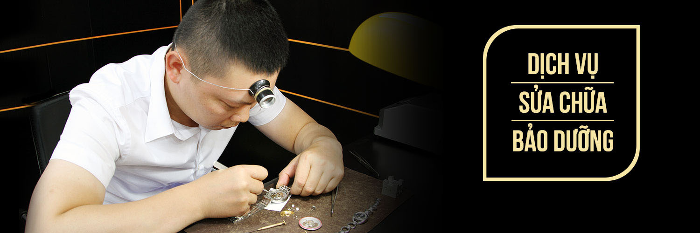

DỊCH VỤ

1. SỬA CHỮA
Với hệ thống thiết bị kiểm tra và sửa chữa hiện đại, tính năng chuyên dụng. Các chuyên gia kỹ thuật dày dạn
kinh nghiệm về sửa chữa đồng hồ của chúng tôi sẵn sàng tư vấn và đưa ra giải pháp kỹ thuật tốt nhất, nhanh
nhất để sửa chữa cho đồng hồ của Quý khách khi đồng hồ gặp trục trặc. Tuy nhiên chúng tôi chỉ tiếp nhận sửa
chữa cho những đồng hồ chính hãng.
Tùy vào tình trạng thực tế và mức độ cần phải sửa chữa, bảo dưỡng cho đồng hồ của Quý khách. Sau khi kiểm
tra, nhân viên kỹ thuật của chúng tôi sẽ thông báo cụ thể từng chi phí sửa chữa bảo dưỡng, linh kiện thay
thế, thời gian sửa chữa vv... công việc sửa chữa và bảo dưỡng chỉ được tiến hành khi Quý khách đồng ý với
các thông báo chi phí liên quan từ nhân viên của chúng tôi.
2. BẢO HÀNH
Ngoài việc bảo hành cho tất cả đồng hồ mua từ hệ thống cửa hàng. Chúng tôi tiếp nhận bảo hành cho các nhãn hiệu đồng hồ chính hãng mua từ các Đại lý khác ngoài hệ thống của chúng tôi, nhưng các nhãn hiệu đồng hồ đó phải là nhãn hiệu đồng hồ chúng tôi cũng đang cung cấp. Ngoài chính sách bảo hành theo qui định của các hãng đồng hồ, tùy vào tình hình thức tế và mức độ hư hỏng của đồng hồ, chúng tôi sẽ hỗ trợ quý khách tối đa nhất nếu có khả năng.
3. THAY PIN
Cần chú ý rằng đồng hồ phải được thay Pin ngay khi hết Pin và phải được thay bằng đúng chủng loại Pin. Mặc
dù, hiện nay Pin được chế tạo tốt, nhưng khi Pin hết hạn có thể bị gỉ và gây hư hại tới các bộ phận khác của
đồng hồ.
- Tất cả Pin được thay bởi $$$ đều là Pin chính hãng và được bảo hành trong vòng 6 tháng.
- Đồng hồ được mua tại hệ thống các cửa hàng thuộc $$$ đều được thay Pin miễn phí không hạn chế số lần và
vĩnh viễn.
- Mỗi khi thay Pin đồng hồ đều được kiểm tra IC, goăng chống nước và các chi tiết liên quan.
4. BẢO DƯỠNG
Giống như Xe hơi, đồng hồ cũng cần được bảo dưỡng thường xuyên để các bộ phận nhỏ xíu, các chi tiết tinh vi
kết hợp với nhau tốt nhất giúp đồng hồ hoạt động luôn chính xác và tăng thêm tuổi thọ của đồng hồ.
Bộ máy của đồng hồ được cấu thành từ rất nhiều bộ phận khác nhau, các bộ phận kết hợp với nhau hoạt động
liên tục dựa trên sự truyền động. Và các loại dầu chuyên dụng chính là thành phần giúp tất cả các bộ phần
này vận hành một cách êm ái. Do vậy việc rửa sạch máy và chấm dầu mới là một việc làm cần thiết giúp bộ máy
chiếc đồng hồ của bạn luôn hoạt động một cách chính xác và bền bỉ trong nhiều năm. Thời gian bảo dưỡng định
kỳ trung bình đối với một chiếc đồng hồ là sau khoảng 3 năm sử dụng.
5. THAY DÂY ĐEO ĐỒNG HỒ "DÂY DA"
Vì là một chất liệu hữu cơ nên tuổi thọ của dây da bị giới hạn bởi các tác động từ môi trường, nước và qua
thời gian sử dụng, đặc biệt là mồ hôi từ tay người đeo cùng với sự hao mòn sẽ làm dây da bị lão hóa nhanh
chóng, dây da của đồng hồ sẽ bị hư hại và trở nên cũ nát do bị tác hại từ những nguyên nhân trên vv.. bạn có
thể làm rơi mất hoặc hư hỏng đồng hồ khi dây da của đồng hồ bị đứt. Chúng tôi cung cấp dịch vụ thay Dây da
cho đồng hồ với nhiều nhãn hiệu Dây da cao cấp, chất lượng tốt được nhập khẩu từ chính hãng, có nhiều kích
cỡ, chủng loại da và phong phú về màu sắc có thể phù hợp với nhiều loại đồng hồ.
Khi thấy dây da của đồng hồ bị rạn nứt, mục nát cần thay ngay bằng dây da mới có kích cỡ tương đương tránh
để dây da bị đứt đột ngột đồng hồ sẽ bị rơi, vỡ dẫn đến hư hỏng các bộ phận khác của đồng hồ.
6. ĐÁNH BÓNG
Do bị trầy xước bề mặt kim loại sau nhiều năm sử dụng, cũng như bị hoen ố do tác động của mồ hôi, bụi bẩn, môi trường làm cho vỏ và dây chiếc đồng hồ của bạn xuống cấp. Để giúp bạn làm mới lại vỏ và dây của đồng hồ, chúng tôi cung cấp đến với bạn dịch vụ Đánh Bóng vỏ và dây của đồng hồ nhằm khôi phục lại độ sáng bóng cho chiếc đồng hồ của bạn.